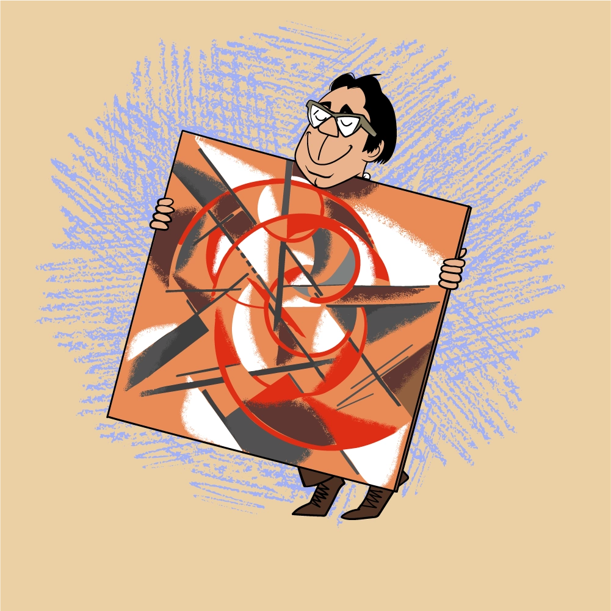

Στην αρχή, κατάφερα να πάρω δύο πίνακες του Λιούμποφ Πόποβα, μετά έσπασε το νήμα και μόνο τυχαία επέστρεψα στον σωστό δρόμο.

Η Πόποβα πέθανε το 1924 και μετά συνάντησα τον αδερφό της Πάβελ Σεργκέεβιτς Ποπόφ, καθηγητή πανεπιστημίου, έναν πολύ όμορφο, ψηλό κύριο. Έμενε στην οδό Αρμπάτ, σε ένα από τα σοκάκια, σε ένα μεγάλο διαμέρισμα. Στο δωμάτιο που με δέχτηκε, είδα δύο μικρούς πίνακες της Πόποβα.

Είπα ότι είχα ακούσει πολλά για την αδερφή του. Εκείνος απάντησε: «Ναι, ξέρετε, πέθανε νωρίς, αλλά έχω ακόμα μερικά από τα έργα της». Είπα ότι μάζευα τα έργα της και ήθελα να τα αγοράσω από αυτόν. Και εκείνος απάντησε: «Γιατί όχι; Θα σου δείξω". Με οδήγησε σε ένα άλλο δωμάτιο, όπου ήταν στοιβαγμένοι 10-15 καμβάδες. Όλα πρώτης κατηγορίας! Και τα αγόρασα.

Ο Πάβελ Σεργκέιεβιτς χώρισε τους μικρούς καμβάδες με μεγάλη δυσκολία. Όταν του είπα ότι θέλω να αγοράσω κι εγώ ένα μικρό, δεν συμφώνησε: «Θα το αφήσω αυτό, γιατί είναι μικρό, μπορείς να το κρεμάσεις πάντα, αλλά τα μεγάλα... Τι να τα κάνω ;"

Ο Pavel Sergeievich είχε έναν θετό γιο που ζούσε στο Zvenigorod. Κάποτε ο Πάβελ Σεργκέιεβιτς μου πρότεινε να τον επισκεφτώ γιατί υπέθεσε ότι μπορεί να είχαν μείνει εκεί κάποιοι πίνακες της αδερφής του. Πήγα λοιπόν…

Εξοχική κατοικία, μεγάλος κήπος. Ήταν ακριβώς η εποχή της ανθοφορίας - ροζ και λευκές μηλιές, κερασιές. Με υποδέχτηκαν πολύ φιλικά.
Και το πρώτο πράγμα που είδα όταν ανέβηκα τις σκάλες στον δεύτερο όροφο ήταν ο πίνακας της Πόποβα - υπήρχε μια χειροτεχνία κρεμασμένη πάνω του...

Μετά περπατήσαμε στον κήπο. Και είδα το παράθυρο του αχυρώνα, καρφωμένο με κόντρα πλακέ. Η υπογραφή μπορούσε να διαβαστεί στο κόντρα πλακέ: "Popova".

Μπήκα στον αχυρώνα και είδα ότι στο πίσω μέρος του κόντρα πλακέ υπήρχε ένα όμορφο έργο του καλλιτέχνη. Αμέσως προσφέρθηκα να μου το πουλήσω, αλλά ο ιδιοκτήτης του σπιτιού απάντησε: «Όχι, δεν μπορώ, αν βρέξει, όλα στον αχυρώνα θα βραχούν. Πρώτα, φέρε μου το κόντρα πλακέ και μετά θα σου δώσω τον πίνακα».
Έπρεπε να πάω στη Μόσχα για να ψάξω για κόντρα πλακέ. Δεν βρήκα το σωστό κομμάτι, οπότε αγόρασα δύο μικρότερα και τα έφερα στο Zvenigorod.
Βοηθήστε τον Κωστάκη να μπει στη συλλογή του έναν πίνακα του Lyubov Popova!

Σε αντάλλαγμα, ο ιδιοκτήτης μου έδωσε τον υπέροχο πίνακα. Μου πούλησε και τους υπόλοιπους πίνακες πολύ φτηνά.
Έτσι, απέκτησα τα περισσότερα έργα της Πόποβα από την οικογένεια του καλλιτέχνη.
